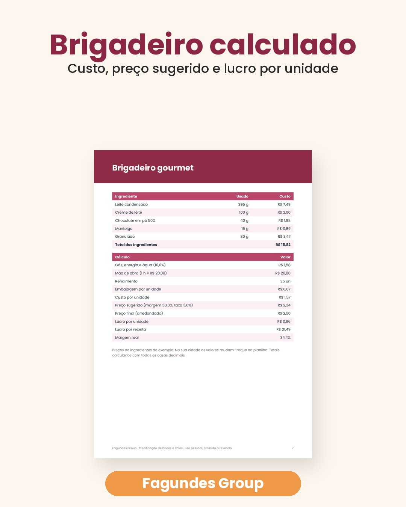
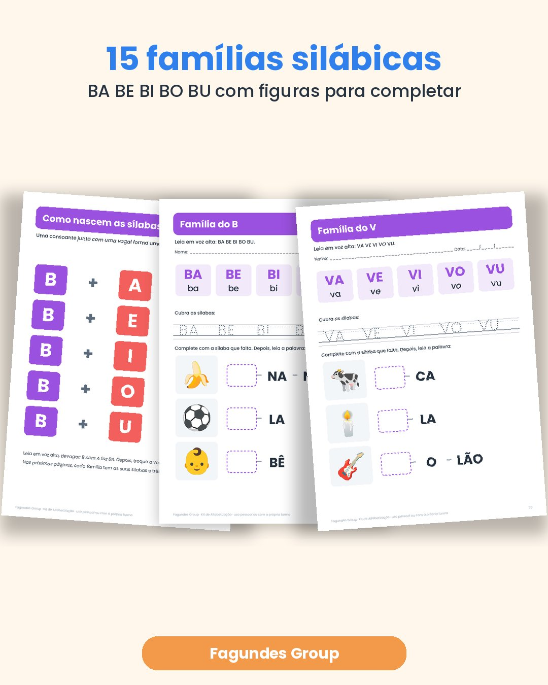

Artigos práticos
Contas e métodos para quem trabalha por conta própria, com exemplos resolvidos.
 Confeitaria
ConfeitariaComo calcular o preço de um bolo (sem multiplicar por 3)
Passo a passo para calcular o preço de venda de um bolo: ingredientes, embalagem, gás, sua hora de trabalho, taxa da maquininha e margem. Com exemplo resolvido.

ConfeitariaQuanto cobrar pelo cento de brigadeiro: a conta completa
Como calcular o preço do cento de brigadeiro somando ingredientes, forminhas, gás, sua hora, margem e taxa da maquininha. Exemplo resolvido passo a passo.
 Beleza
BelezaQuanto cobrar por unha em gel: como calcular o preço justo
Aprenda a calcular o preço da unha em gel somando material por aplicação, hora técnica, taxa da maquininha e margem. Exemplo resolvido para manicure e nail designer.
RHComo fazer avaliação de desempenho com a matriz 9-Box (passo a passo para PMEs)
Guia prático para pequenas e médias empresas aplicarem a matriz 9-Box: critérios, autoavaliação, calibração, devolutiva e PDI. Sem software caro.
Social mediaQuanto cobrar como social media: calcule sua hora e o preço por cliente
Como calcular o preço mínimo de um social media ou gestor de tráfego freelancer: custos, pró-labore, horas faturáveis e preço por cliente. Exemplo resolvido.
 Finanças da casa
Finanças da casaOrçamento familiar com renda variável: como planejar quando cada mês é diferente
Método simples para autônomos, MEIs e comissionados organizarem o orçamento da casa quando a renda muda todo mês: planejar pelo mês mais fraco e criar um caixa de equalização.
 Limpeza
LimpezaQuanto cobrar pela diária de limpeza: orçamento por cômodo e tarifa por hora
Como diaristas e profissionais de limpeza podem calcular o preço do serviço por cômodo, a partir da própria tarifa por hora. Exemplo de orçamento resolvido.

AlfabetizaçãoAlfabetização em casa: uma rotina de 15 minutos por dia
Como pais e professores podem apoiar a alfabetização com uma rotina curta e diária: sons das letras, sílabas, formação de palavras e leitura. Com atividades para imprimir.